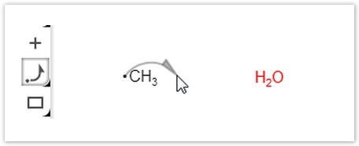
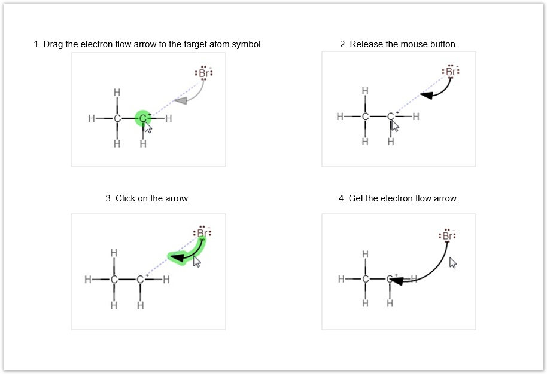
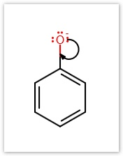
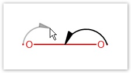
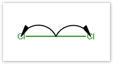
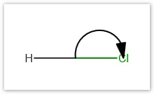
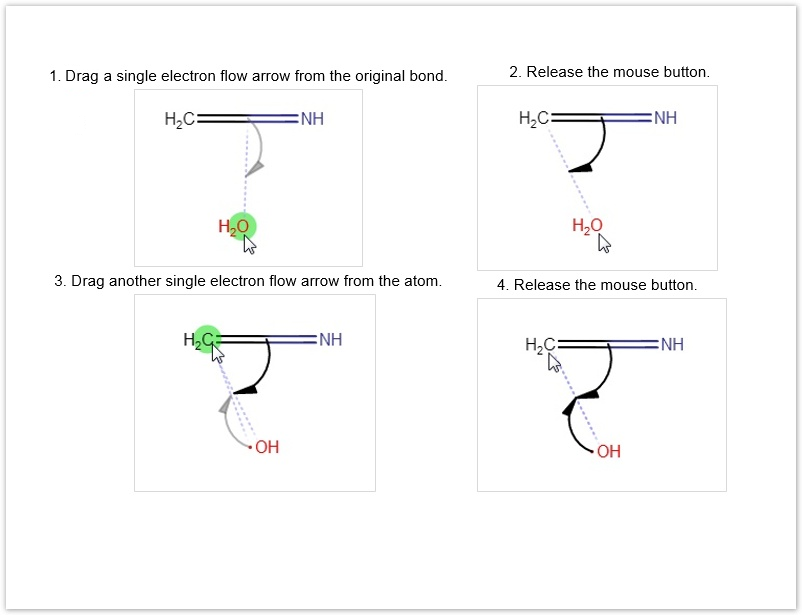
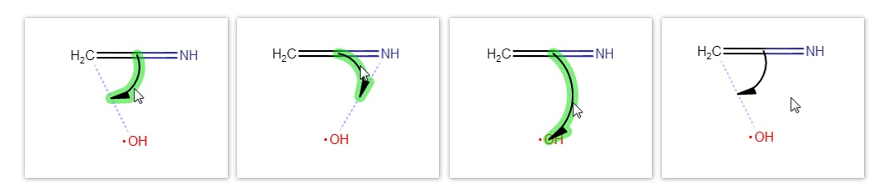
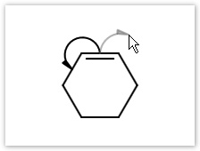
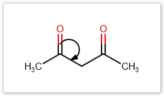

Marvin JS User's Guide
Table of Contents (Start)
Reaction Mechanisms
Electron flow arrows (or mechanism arrows) are the standard tools for describing the movement of electrons in the elementary reaction steps of a complex mechanism. With their help, we can display the formation and breaking of chemical bonds.
In Marvin JS, you can choose between two types of electron flow arrows: Single (
) or Double (  ).
).
The former arrow type is for visualizing single electron movement, while the latter is for displaying the movement of electron pairs.
Below, you can find a detailed description about the different cases of using electron flow arrows.
You can also watch a video tutorial about their usage in mechanism drawing
here.
Accordingly, single electron flow arrows can start from:
-
a radical electron of an atom;
-
a lone pair electron of an atom; or
-
from a bond.
-
As for double arrows, they can start from:
-
a lone pair of an atom; or
-
from a bond.
-
In both cases, an arrow can end:
-
on an atom;
-
on a bond; or
-
on an incipient bond between two atoms which do not have a common existing bond.
-
If you want an atom to be the source of an electron flow arrow, the atom has to have a radical electron or a lone pair.
To draw an electron flow arrow, select the preferred type of electron flow arrow button from the Tools toolbar. The arrow should be dragged directly from one of the electrons (dot symbols) on the source atom to the target atom. If you hover over an atom which has free electrons for a mechanism arrow, the atom will be highlighted. While dragging the electron flow arrow to the target atom symbol, you can see a grey feedback (indicator) of the arrow.

Click on the source atom in order to enlarge it, and drag the arrow from the enlarged dot.
Electron flow arrow from atom to atom
Drawing an electron flow arrow from an atom to another atom always results the incipient bond position at first; however, if you meant an "ordinary" electron flow arrow, you can change it by clicking on the arrow once.
As a chemically intelligent editor, Marvin JS does not allow drawing more than one single electron flow arrow per electron (i.e., one single arrow from a radical and no more than two single arrows from a lone pair), as well as no more than one double electron flow arrow per lone pair.

Electron flow arrow from atom to bond
Similarly to the the previous point, the source atom has to have explicitly displayed radical or lone pair electrons from which the arrow can be dragged. The endpoint of the arrow will be the midpoint of the target bond. In this case, incipient bond type is unavailable.
Note that a bond can be the target of an electron flow arrow only if it is adjacent to the source atom.
 
Electron flow arrow starting from a bond
Electron flow arrow from bond to atom
Cleavage
Electron flow arrows which start from a bond and target an atom can be used to display the process of bond cleavage.
In homolytic bond cleavage, the splitting of the bonding electron pair can be represented by using single electron flow arrows.

Homolytic bond cleavage.
You can display heterolytic bond cleavage, where both bonding electrons will belong to the same atom, by using double electron flow arrows.

Heterolytic bond cleavage.
Bond formation
When the electrons required for bond formation come from an existing bond, then the bond in formation will connect one of the atoms of the original bond to another atom. You can describe such a mechanism with an incipient bond electron flow arrow which starts from this existing bond, and ends between the two atoms. See an example below.
-
Draw a single electron flow arrow from the original bond (a double bond in this case) to the atom which will belong to the newly formed bond.
-
The incipient bond will appear from one atom of the bond to the atom (in this case, the individual atom). If you want the incipient bond to belong to the other atom of the original bond, click on the arrow again. (For details, see the Tip section below.)
-
In order to add the other electron flow arrow to your drawing (which comes from the oxygen atom), add a monovalent radical to the oxygen, and draw a single electron flow arrow from this radical to the atom on the other end of the incipient bond (the carbon atom in this case).
To change the origin of the electron click on the arrow. When you want to draw an "ordinary" single electron flow arrow instead, click on it again. For a third click, the arrow head jumps back to its original position. (When there is only two possible option for the bond, only the two cases can be reached by clicking like this.)

Electron flow arrow between two bonds
Drawing an electron flow arrow from one bond to another is only possible if these two bonds have an atom in common.

Similarly, double electron flow arrows can be used to display, for instance, the relocation of π-bonds.

Manipulation of electron flow arrows
Selection
Electron flow arrows can be selected either by clicking on them with the Rectangle or the Freehand selection tool being active, or by dragging over them with one of the selection tools. In the latter case, you can only select the electron flow arrow without its source and target atom or bond if you use the Freehand selection tool; while using Rectangle selection, the arrow can only be selected with its source and target.
Delete
Deleting electron flow arrows can be accomplished in much the same way as with other objects: using either the Delete toolbar button or the the Del key. Please note that an electron flow arrow is automatically deleted if its source or taget atom is deleted or changed, as well as when one of the atoms belonging to its source or target bond is deleted or changed (incipient bonds included as well).
Resize
The arrows can be resized (their arc angle can be changed) by dragging them while either the electron flow arrow or the selection button is active on the toolbar.
Here you can see a video summary about the electron flow arrow.